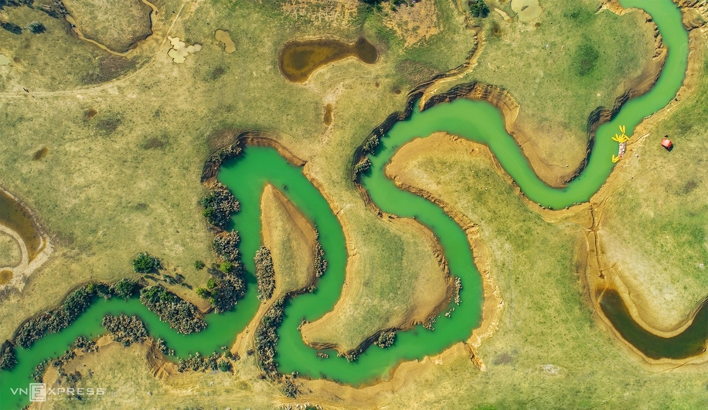

Trên thảo nguyên Lạng Sơn
Xã Hữu Liên
Xã Hữu Liên nằm cách trung tâm huyện Hữu Lũng, tỉnh Lạng Sơn khoảng 25 km về phía bắc; cách Hà Nội khoảng 150 km theo quốc lộ 1A và đường tỉnh lộ 243. Xã có tổng diện tích hơn 6.000 ha, dân số hơn 3.000 người gồm chủ yếu các dân tộc Kinh, Tày, Nùng, Dao và Mông.
Du khách tới Hữu Liên sẽ được chiêm ngưỡng những khối núi đá vôi kỳ vĩ cho tới những đồng cỏ mênh mông, từ thác nước phủ đầy rêu phong cho tới hồ nước trong xanh màu ngọc bích.
Thảo nguyên
Từ làng nhà sàn ở thôn Làng Bên, du khách đi khoảng 2 km là tới đồng cỏ Đồng Lâm. Thảo nguyên trải dài khoảng 1,5 km, có đường mòn và dòng suối chảy vắt ngang. Nguồn nước khởi phát từ các khối núi đá vôi chảy về điểm cuối đồng cỏ là hồ nước Đồng Lâm trong xanh. Mùa nước ngập, khu vực hồ này tập trung đông người dân di chuyển bằng bè mảng và thả lưới, đánh bắt cá.
Tác giả cho biết từ điểm cuối hồ Đồng Lâm, du khách băng rừng thêm khoảng một tiếng đường rừng nguyên sinh sẽ tới thôn Lân Đặt với khoảng 26 hộ gia đình dân tộc Dao sinh sống. Nơi đây hoàn toàn hoang sơ, không sóng wifi, không có điện và xung quanh là rừng nguyên sinh.